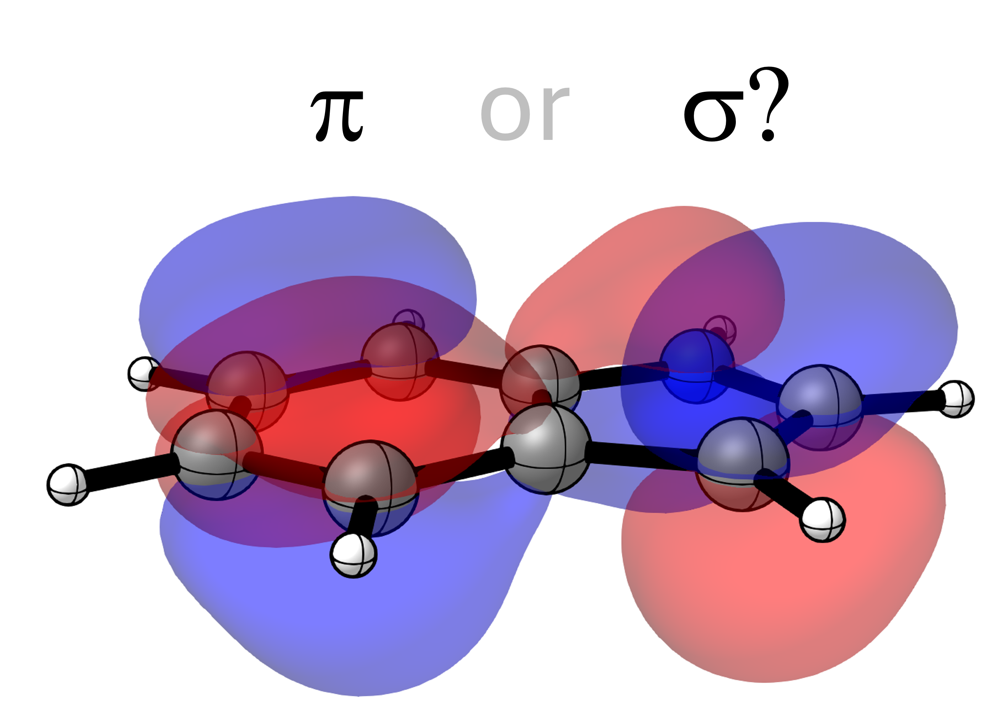

Detection of π-Orbitals#
It can often be important to differentiate between the symmetries of orbitals. Especially in the case of planar aromatic molecules it can be crucial to know which orbitals are π-symmetric and which ones are σ-symmetric.

Differentiation of π- and σ-orbitals can be performed easily using the PyOrbb Python API. In this tutorial we consider the molecular orbitals of the indole molecule calculated at the OLYP/TZ2P level of theory using ADF2025. The input molecule was randomly oriented so we must first obtain the normal vector of the plane. We then calculate the alignment of the carbon and nitrogen 2p-orbitals with this normal vector to obtain an alignment score that should indicate either π- or σ-character.
Download indole.adf.rkf
Download pi_orbitals.py
'''
This example shows how to find pi-orbitals of a heterocyclic compound using PyOrbb.
This example uses an ADF calculation on indole in a random orientation
calculated at the OLYP/TZ2P level of theory with a small frozen core.
'''
import pyorbb
import scipy
import numpy as np
# load the orbital data
orbs = pyorbb.Orbitals('indole.adf.rkf')
# this molecule has a random orientation, so we must first find the
# normal vector to the plane of the molecule to find the right pi-orbitals
molecule = orbs.molecule
# find orthogonal components of the molecule using singular value decomposition
# we only need the rotation matrix Vh in this case
_, _, Vh = scipy.linalg.svd(molecule.as_array())
# the last row of Vh is the vector with the smallest component
# this should be the normal vector of the planar indole molecule
n = Vh[-1]
# we can then find the p-orbitals of the carbons and nitrogens
px_sfos = orbs.sfos.filter(fragment=('N', 'C'), orbname='1P:x')
py_sfos = orbs.sfos.filter(fragment=('N', 'C'), orbname='1P:y')
pz_sfos = orbs.sfos.filter(fragment=('N', 'C'), orbname='1P:z')
pi_mos = []
sigma_mos = []
# we then check every MO
for mo in orbs.mos:
# and obtain the coefficients of the px, py and pz orbitals
px_coeffs = [sfo.coefficient(mo) for sfo in px_sfos]
py_coeffs = [sfo.coefficient(mo) for sfo in py_sfos]
pz_coeffs = [sfo.coefficient(mo) for sfo in pz_sfos]
# we can now construct the direction of the p-orbitals
p_vectors = np.array([px_coeffs, py_coeffs, pz_coeffs]).T
# and normalize the directions
p_vectors = p_vectors / np.linalg.norm(p_vectors, axis=1, keepdims=True)
# check if the directions are aligned with the normal vector
alignments = np.dot(p_vectors, n)
# the total alignment can just be the product of all individual alignments
alignment = np.product(alignments)
# if the total alignment is close to 1 it is most likely a pi-orbital
if alignment > 0.999:
pi_mos.append(mo)
# otherwise it is probably a sigma-orbital
else:
sigma_mos.append(mo)
print('π-MOs:')
print('\t'.join([mo.name.rjust(4) for mo in pi_mos]))
print()
print('σ-MOs:')
print('\t'.join([mo.name.rjust(4) for mo in sigma_mos]))
The expected output is as follows
π-MOs:
14A 20A 21A 22A 23A 35A 47A 56A 62A 68A 73A 78A 86A
97A 99A 107A 109A 132A 137A 180A 205A 242A 248A 249A 250A 259A
σ-MOs:
1A 2A 3A 4A 5A 6A 7A 8A 9A 10A 11A 12A 13A
15A 16A 17A 18A 19A 24A 25A 26A 27A 28A 29A 30A 31A
32A 33A 34A 36A 37A 38A 39A 40A 41A 42A 43A 44A 45A
46A 48A 49A 50A 51A 52A 53A 54A 55A 57A 58A 59A 60A
61A 63A 64A 65A 66A 67A 69A 70A 71A 72A 74A 75A 76A
77A 79A 80A 81A 82A 83A 84A 85A 87A 88A 89A 90A 91A
92A 93A 94A 95A 96A 98A 100A 101A 102A 103A 104A 105A 106A
108A 110A 111A 112A 113A 114A 115A 116A 117A 118A 119A 120A 121A
122A 123A 124A 125A 126A 127A 128A 129A 130A 131A 133A 134A 135A
136A 138A 139A 140A 141A 142A 143A 144A 145A 146A 147A 148A 149A
150A 151A 152A 153A 154A 155A 156A 157A 158A 159A 160A 161A 162A
163A 164A 165A 166A 167A 168A 169A 170A 171A 172A 173A 174A 175A
176A 177A 178A 179A 181A 182A 183A 184A 185A 186A 187A 188A 189A
190A 191A 192A 193A 194A 195A 196A 197A 198A 199A 200A 201A 202A
203A 204A 206A 207A 208A 209A 210A 211A 212A 213A 214A 215A 216A
217A 218A 219A 220A 221A 222A 223A 224A 225A 226A 227A 228A 229A
230A 231A 232A 233A 234A 235A 236A 237A 238A 239A 240A 241A 243A
244A 245A 246A 247A 251A 252A 253A 254A 255A 256A 257A 258A 260A
261A 262A 263A 264A 265A 266A 267A 268A 269A 270A 271A 272A 273A
274A 275A 276A 277A 278A 279A 280A 281A 282A 283A 284A 285A 286A
287A 288A 289A 290A 291A 292A 293A